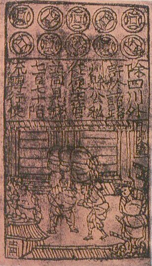
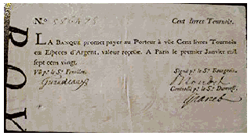
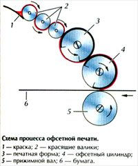
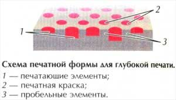
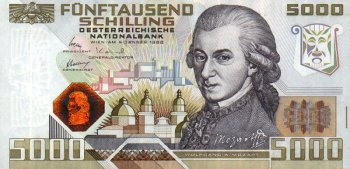
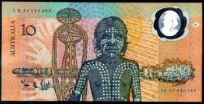

О бумажных деньгах
 В отличие от денежных металлов, которые сохраняют ценность даже спустя
тысячелетия в любой стране, бумажные деньги сами по себе ценности не
имеют. Курс бумажных денег гарантируется правительством или выпустившим
их банком, а потому политические и экономические кризисы могут быстро их
обесценить. Однако, несмотря на некоторые недостатки, функцию меры
стоимости бумажные деньги выполняют так же успешно, как и металлические,
а в роли средства обращения и платежа банкноты значительно удобнее.
В отличие от денежных металлов, которые сохраняют ценность даже спустя
тысячелетия в любой стране, бумажные деньги сами по себе ценности не
имеют. Курс бумажных денег гарантируется правительством или выпустившим
их банком, а потому политические и экономические кризисы могут быстро их
обесценить. Однако, несмотря на некоторые недостатки, функцию меры
стоимости бумажные деньги выполняют так же успешно, как и металлические,
а в роли средства обращения и платежа банкноты значительно удобнее. Банкнота (от английского bank-note - "банковский билет") - денежный знак, изготовленный из бумаги или пластика, который выпускается центральным банком государства и обязателен к приему на всей его территории.
Вместе с монетами банкноты составляют систему наличных денег государства. Как правило, банкноты имеют больший номинал, чем монеты.
История появления бумажных денег и их распространение
В основе идеи денег лежит признание некоего товара (продукта) в качестве средства платежа. Древнейшая система расчета имела привязку к сельскому хозяйству: платежным средством тогда служили домашние животные и зерновые культуры. Например, в Древней Месопотамии расчетной "денежной" единицей было зерно, а японская феодальная система строилась на годовом урожае риса (коку).
На следующем историческом этапе привилегированное положение в экономике различных стран прочно заняли металлические деньги.
Первые бумажные деньги
В Древнем Китае монеты были прямоугольной формы с отверстием посередине. Несколько таких монет можно было легко нанизать на веревку. Вскоре богатые торговцы обнаружили, что их денежные "ожерелья" довольно тяжелые, и носить их с собой неудобно. Чтобы решить эту проблему, торговцы стали оставлять монеты на хранение, а взамен получали расписку с указанием суммы. Нередко на этой расписке рисовали количество монет, которое она заменяла. По этому документу человек в любой момент мог забрать свои деньги обратно. Бумагу для печати денег китайцы изготавливали из коры тутового дерева.

Первые китайские деньги
В 600-е годы в Китае печатались бумажные деньги местного значения. А к 960 году династия Сонг из-за нехватки меди для чеканки монет выпустила банкноты для всеобщего обращения по стране. Банкнота являлась документом, подтверждающим возможность ее обмена на другой ценный объект, как правило, монеты.
Изначально банкноты были ограничены территориально и по сроку действия. Если банкнота предъявлялась позднее заявленного срока, за нее давали сумму меньше номинальной стоимости. Но монгольская династия Юань, столкнувшись с огромным дефицитом звонкой монеты для финансирования оккупации Китая, осуществленной в 1280 году, начала печатать бумажные деньги без ограничения по срокам. К 1455 году, стремясь сдержать экономическую экспансию и положить конец гиперинфляции, новая династия Минг изъяла из обращения бумажные деньги и практически приостановила торговлю.
Бумажные деньги в Европе и США
Введение в обращение бумажных денег тесно связано с дефицитом металла для производства монет. Дело в том, что наличие золота и серебра определяется темпами развития всего одной отрасли - горнодобывающей (которая напрямую зависит от природных ресурсов), тогда как потребность в деньгах зависит от развития экономики в целом. Поэтому, когда после промышленной революции начался ускоренный экономический рост, замена металлических денег в обращении бумажными стала не только возможной, но и неизбежной. В течение XVIII в. бумажные деньги получили распространение во всех странах Европы (в России - с 1769 года), к концу XIX в. они стали господствовать во всем мире.
В Европе банкноты появились значительно позднее, чем в Китае. Первые бумажные деньги представляли собой "монеты" из бумаги, выпущенные в Протестантском Лейдене (Нидерланды) во время испанской осады в 1574 году. Более чем 5 тысяч из предположительно 14 тысяч жителей города умерли, в основном от голода. Иссякли даже запасы кожи, которую применяли в качестве денег в крайних случаях: ее сварили и использовали в пищу. Тогда, чтобы создать валюту, горожане взяли обложки и страницы сборников церковных гимнов и посланий и сделали из них бумажные пластины. Штамповали вновь созданные "деньги" с помощью тех же клише, которые до этого использовались для чеканки металлических монет.
Настоящие банкноты увидели свет немного позже. Произошло это в Швеции.
В 1644 году в стране вышли в обращение медные деньги, но они были слишком тяжелыми и, к тому же, быстро обесценились из-за Тридцатилетней войны (1618-1648). Принимая это во внимание, Иоганн Палмструх ( Johan Palmstruch ), основавший в 1657 году Стокгольмский банк ( Stockholms Banco ), предложил новую денежную единицу - временную кредитную бумагу ( Kreditivsedlar ). Первые банкноты он отпечатал в июле 1661 года.
К сожалению, Палмструха постигла неудача: вскоре у банка возникли проблемы из-за того, что купюр было выпущено слишком много. Директора банка привлекли к суду и приговорили к тюремному заключению.
На сегодняшний день сохранилось совсем немного первых банкнот Стокгольмского банка, и они представляют собой редчайшие коллекционные экземпляры.
Становление английской денежной системы сопровождалось длительной борьбой между королем и торговцами за право контроля над ней. Восшествие на престол Вильгельма III Оранского в 1688 году, которому предшествовала "Славная революция", профинансированная торговцами, сдвинуло чашу весов в пользу долгожданного многими независимого кредитного института.
Банк Англии, созданный в 1694 году по инициативе Уильяма Паттерсона (William Patterson), выпустил банкноты Goldsmithnotes в качестве простого векселя (долгового обязательства) английских ювелиров. Пункт "(Я) обязуюсь выплатить подателю сего по первому требованию сумму в … фунтов" формально означал, что вексель можно обменять на золото, хотя на практике это не всегда было возможно.
Уступив право печатать банкноты, государство получило заем. А Банк Англии со временем стал одним из наиболее влиятельных финансовых учреждений в мире.
В 1797 году был издан "Рестрикционный акт", согласно которому Банк Англии освобождался от размена банкнот -векселей на золото , устанавливался принудительный курс банкнот , и последние по существу превратились в бумажные деньги . В 1820 был восстановлен размен банкнот на золото , и банкноты вновь превратились в кредитные деньги .
Через год после основания Банка Англии, в 1695 году, был создан Банк Шотландии.
Он владел монополией на выпуск шотландских банкнот вплоть до 1717 года.
Как правило, центральный банк или казначейство обладает исключительным правом на выпуск банкнот внутри страны. Но в Великобритании и некоторых других странах исторически сложилось так, что банкноты выпускают несколько различных банков. В настоящее время на основании конституционных проектов в Объединенном Королевстве Великобритании и Северной Ирландии две страны из четырех, входящих в его состав - Шотландия и Северная Ирландия, печатают собственные банкноты для внутреннего обращения. В то же время центральный банк Объединенного Королевства - Банк Англии - выпускает банкноты, которые являются законным платежным средством в Англии и Уэльсе, а также могут использоваться на остальной территории государства.
В Норвегии, которая в те времена была датской провинцией, в 1695 году бизнесмен Тор Молен (Thor Mohlen) с одобрения правительства также выпустил в обращение бумажные деньги. На банкнотах имелось пять восковых печатей. К сожалению, жители страны не увидели в них пользы и, едва получив купюры, понесли их обратно в банк, чтобы обменять на звонкую монету. Что, само собой, вызвало финансовые затруднения у господина Молена.
В Дании бумажные деньги поступили в обращение лишь в 1713 году. Произошло это во время войны с Северной Ирландией.
Франция начала печатать бумажные деньги в 1703 году во время правления Людовика XIV. В 1776 году был учрежден банк "Касса коммерческого учета ", которому был поручен выпуск банкнот , предназначенных для покрытия государственных расходов. Хотя эти денежные знаки и назывались банкнотами (в значении "вексель"), по существу они являлись бумажными деньгами. Эмиссия бумажных денег широко практиковалась во Франции в эпоху Великой французской революции 1789-1794 годов: в 1789-1790 были выпущены ассигнаты (фр. assignat), первоначально на 2,4 млрд. ливров, а к 1795 их сумма составляла 40 млрд. ливров. В феврале 1797 года ассигнаты были аннулированы, и Франция вернулась к металлическому денежному обращению. В XIX в. страна дважды возвращалась к бумажно-денежной системе: в связи с Февральской революцией 1848 года и франко-прусской войной 1870-1871. В период франко-прусской войны правительство Франции расширило выпуск банкнот для финансирования войны, объявило о неразменности банкнот и придало им принудительный курс. Банкноты из векселей превратились в бумажные деньги .

Бумажные деньги времен Французской революции
С 1685 года во Французской Канаде в случае крайней необходимости в роли денег использовались игральные карты, на которых от руки писали номинал "купюры".
В Северной Америке бумажные деньги были выпущены раньше, чем в европейских странах, еще в период существования североамериканских колоний Англии (Пенсильвания, Южная и Северная Каролина и др.).
В начале 1690-х годов Массачусетская колония (ныне - штат Массачусетс, США) первой из колоний выпустила банкноты для постоянного обращения.
Во время борьбы английских колоний за независимость Конгресс штатов в 1775 году принял постановление о выпуске "континентальных денег" на 3 млн. долларов. К 1779 их сумма превысила 240 млн. долларов. Темпы обесценивания "континентальных денег" опережали темпы их выпуска. Курс бумажных денег быстро падал, 1 серебряный доллар в 1780 году равнялся 50-60 бумажным долларам. "Континентальные деньги " были ликвидированы 18 марта 1780 года путем девальвации с отсрочкой обмена на 6 лет и использованием пятипроцентных облигаций. Правительство США вновь осуществило эмиссию бумажных денег во время гражданской войны 1861-1865 годов, напечатав знаки зеленого цвета - "гринбеки". Всего было выпущено бумажных денег на сумму 450 млн. долларов; обесценились они в 2,5 раза. С окончанием войны избыточную массу денег изъяли из обращения, и устойчивость доллара была восстановлена путем ревалоризации.
Окончательный переход к бумажным деньгам в США был форсирован во многом Президентским Указом 6102, подписанным 5 апреля 1933 года Франклином Рузвельтом. Документ предусматривал наказание в виде штрафа 10 тысяч долларов или 10 лет тюрьмы любому, кто будет держать у себя больше чем 100 долларов золотом, а не банкнотами.
Бумажные деньги в России
В России бумажные деньги впервые были выпущены в 1769 году при Императрице Екатерине II. Это были ассигнации, которые принимались в платежи наравне с медными и серебряными монетами . Екатерина II предполагала ограничить выпуск ассигнаций суммой 100 млн. рублей, однако уже к 1796 эта цифра достигла 150 миллионов. Ассигнации в России находились в обращении до проведения денежной реформы министром финансов графом Е.Ф. Канкриным в 1839-1843 годах.
В Советской России бумажные деньги существовали в виде так называемых "керенок", выпущенных Временным правительством в августе 1917 года купюрами 20 и 40 рублей. В 1919 Правительство РСФСР выпустило расчетные знаки, позже они были названы совзнаками. Совзнаки дважды были деноминированы: в октябре 1921 один рубль денежных знаков образца 1922 года был приравнен к 10 тысячам рублей всех ранее выпущенных денежных знаков; в ноябре 1922 один рубль образца 1923 года был приравнен к 100 рублям образца 1922 или к 1 млн. рублей всех ранее выпущенных денежных знаков. При этих деноминациях обмен денежных знаков не проводился, в обращении находились как вновь выпущенные денежные знаки , так и знаки , подлежащие деноминации, для которых устанавливался определенный срок обращения (до 6 месяцев после объявления о деноминации). В период проведения денежной реформы 1922-1924 Советское правительство в марте 1924 года выпустило казначейские билеты достоинством один, три и пять рублей. Устанавливался паритет между червонцем и казначейскими билетами (1:10). Таким образом, золотое содержание рубля определялось в 1/10 золотого содержания червонца, то есть 0,774234 г чистого золота . Обеспечивались казначейские билеты всем достоянием государства, другими словами, конкретного обеспечения не имели. Эмитентом казначейских билетов был Народный комиссариат финансов СССР. В 1925 году выпуск казначейских билетов был передан Государственному банку СССР. Формально казначейские билеты в СССР выпускались и находились в обращении до 1991 года.
В 1991 году денежные знаки достоинством 1, 3, 5 рублей стали называться "Билеты Госбанка СССР". В 1993 году эти денежные знаки были изъяты из обращения.
Девальвация денег
Легкость, с которой можно производить бумажные деньги, как для официальных властей, так и для фальшивомонетчиков, подвергла и тех и других искушению во времена кризисов, войн и революций печатать бумажные деньги, которые не обеспечены драгоценными металлами или другими товарами. Это неизбежно приводило к гиперинфляции и потере доверия к бумажным деньгам. Именно такая участь постигла "континентальные деньги", выпущенные Континентальным Конгрессом США во время Войны за независимость; ассигнации, находившиеся в обращении во время Французской революции; бумажную валюту, производимую Конфедерацией 11 южных штатов (США) и отдельными штатами в ее составе. То же самое произошло во время финансирования первой мировой войны блоком Центральных держав (Германия, Австро-Венгрия, Болгария и Турция): к 1922 году за одну золотую австро-венгерскую крону 1914 года выпуска давали 14 400 бумажных крон.
Изготовление бумажных денег
За выпуск банкнот, как правило, отвечают центральные национальные банки, они же занимаются их "проектированием". Тематику изображений (выдающиеся люди страны, архитектурные памятники) определяет группа консультантов или специальная комиссия.
Бумага
Сложный процесс создания денег начинается с изготовления банкнотной бумаги, во время которого в бумажную массу внедряют различные защитные элементы - от водяных знаков и текстильных волокон до полимерных вставок, нитей и химических реактивов, обнаруживаемых только специальными детекторами. Бумажная масса хорошо проклеивается (именно поэтому новые деньги "хрустят"), что делает бумагу еще более прочной - она выдерживает несколько тысяч двойных перегибов.
При изготовлении банкнот последовательно применяется три вида печати: офсетная, глубокая (металлографическая) и высокая (типографская).
Офсетная печать
Офсетным способом печатаются фоновая сетка, различные розетки, а на мелких банкнотах еще и основной рисунок.
При офсетном способе перенос краски с печатной формы на материал осуществляется не напрямую, а через промежуточный офсетный цилиндр. Поэтому, в отличие от прочих методов печати, изображение на печатной форме делается не зеркальным, а прямым.

Схема процесса офсетной печати
Печатные и пробельные элементы формы при этом лежат практически в одной плоскости, но их поверхности имеют разные физико-химические свойства. Печатающие элементы - гидрофобные, они хорошо удерживают краску, но отталкивают влагу. Пробельные же элементы - гидрофильные, т. е. хорошо смачиваются водой, а краску отталкивают.
Краски для банкнот обычно разделяют на три цветовые группы - синюю, красную и желтую - и для каждой группы фотоспособом изготавливается отдельная печатная пластина (форма). Краска с этих пластин переносится на резиновое покрытие цилиндра, с которого и печатается многоцветное изображение.
Применяется также Орловская печать - разновидность офсетной печати, которая позволяет получить плавный переход одного цвета в другой. Продукцию орловской машины технически невозможно повторить на другом оборудовании, а также на самой этой машине, не имея оригиналов форм. Этот способ был изобретен в России в 1890 году И.И. Орловым и до сих пор применяется во всем мире для выполнения высококачественных полиграфических работ.
Металлографическая печать (печать с глубоких форм)
Глубокая печать - передача изображения с печатной формы, на которой печатающие элементы углублены по отношению к пробельным.

Схема печатной формы для глубокой печати
Металлографическая печать - одна из разновидностей глубокой печати. Она позволяет получить различные полутона, а также рельефное изображение, которое можно потрогать пальцами на ощупь. Этот метод, наряду с орловской печатью, рекомендован при печати ценных бумаг.
Высокая печать
Рисунок на крупных банкнотах, серийные номера, а также некоторые важные элементы на купюрах малого номинала с целью защиты от подделок выполняются способом высокой печати.
Печатающие элементы на формах высокой печати расположены выше пробельных , отсюда и название. Исторически этот способ, по-видимому, первым получил распространение в качестве технологии тиражирования изображений (именно его, например, использовал Иоганн Гутенберг ).
Далее следуют такие операции: продольная резка листов, поперечная резка, формирование банкнотных пачек, перевязка их бумажными лентами-бандеролями, упаковка в термопленку и другие.
Средства защиты от подделок
Современные банкноты имеют целый набор различных средств защиты, затрудняющих их подделку.
Водяные знаки
Водяные знаки до сих пор являются одним из самых распространенных элементов защиты, поскольку их трудно скопировать. Наиболее распространенными водяными знаками являются портреты исторических личностей, государственные гербы, а также геометрические фигуры (ромбы, кольца, квадраты), волнистые линии.
Существует четыре вида водяных знаков: светлые (элементы водяных знаков светлее, чем фон), темные (элементы водяных знаков темнее, чем фон), двутоновые (сочетают первые две разновидности) и многотоновые (сочетают первые две разновидности, но с плавными переходами между элементами).
Водяные знаки на бумаге начали делать в Италии в XIII веке. Для этого сгибали проволоку длиной около 5 см в кольцо и накладывали на него перекрестье из кусков проволоки, а затем пришивали его к верхней стороне сетки черпальной формы. Когда влажный слой будущего бумажного листа начинал уплотняться в форме, над проволоками он оказывался тоньше; в результате это место при рассматривании высохшего листа на просвет выглядело немного прозрачнее. Со времени появления бумажной филиграни (около 1270) все водяные знаки на носились этим способом.
На бумажных деньгах водяные знаки впервые появились в Англии в 1697 году.
Полутоновая техника. В середине XIX в. англичанин У. Смит изобрел новый способ формирования полутоновых водяных знаков, при котором толщина бумаги в районе филиграни менялась плавно, и водяной знак становился похожим на фотографию с мягкими переходами тонов. Достигалось это благодаря использованию объемного сетчатого экрана, тогда как в традиционном способе проволочная фигура для создания рисунка была плоской.
Денди-роллерная техника. После изобретения бумагоделательной машины с непрерывным бумажным полотном появилась потребность механизировать и процесс формирования филиграни. Дж. Маршалл, английский специалист по ручным черпальным формам, предложил для решения этой проблемы изобретенный им денди-ролл. При денди-роллерном методе проволоки филигранного узора вводились в непросохшую бумагу сверху, тогда как при ручном наоборот - сырая бумага какое-то время лежала на них. По этой причине водяные знаки видны отчетливее на бумаге ручного изготовления.
В настоящее время разрабатывается технология получения цветных водяных знаков.
Волокна
Иногда при производстве бумаги для денег в нее добавляют волокна. Они могут быть окрашенные, то есть видимые невооруженным глазом, и бесцветные, но светящиеся в ультрафиолетовых лучах. Волокна могут распределяться беспорядочно или размещаться в определенных участках бумаги полосами.
В Германии со 2-й половины XIX в. для производства денег начали применять бумагу, изобретенную американцем Джеймсом Вилькоксом, с так называемыми "локализированными" волокнами. На стадии отливки бумажной массы к ней добавляли тончайшие цветные волокна, причем выливали их через тонкие трубки, установленные над металлическим ситом бумагоделательной машины.
Проверить действительность денежного билета, изготовленного таким образом, можно было, пробуя иглой оторвать цветное волокно. Если цветные полоски были нанесены не по вышеописанной технологии, а типографским способом, поддеть их было невозможно.
Флуоресцентные частицы
Вводятся в мягкую массу при создании бумаги. Диагностика подлинности такой бумаги сводится к проверке ее под специальными ультрафиолетовыми лампами. Иногда флуоресцентные частицы могут создавать определенную композицию или надпись.
Конфетти
Маленькие тонкие разноцветные бумажные диски, иногда с микропечатью, вводятся в бумажную пульпу при изготовлении. Такие конфетти способны светиться в ультрафиолетовых лучах.
Тиснение
Тиснение (например, в виде сетки) заметно при просмотре купюры под определенным углом к свету.
Гравюра
Для точной передачи на купюру всех нюансов изображения оригинал портрета или архитектурного сооружения увеличивается в 10-15 раз и перерисовывается мастером так, чтобы линии копии были на одинаковом расстоянии друг от друга. Пластическая форма создается не столько обычными штрихами, сколько утолщением линий, которые передают движение светотени. Потом этот рисунок фотохимическим способом переносится на стальную пластинку, и уже тогда начинается гравирование по металлу.
Филигранный рисунок
Портреты людей на банкнотах, различные виньетки, сетки фона состоят из множества тонких четких линий, которые видны только при большом увеличении. Точно воспроизвести их практически невозможно.
Совмещенный рисунок
Одна часть изображения печатается на лицевой стороне, а вторая наносится на оборотную. На просвет все элементы совмещающихся изображений должны совпасть и образовать единый рисунок.
Микротекст (микрошрифт, микропечать)
Иногда часть рисунка составляют не просто линии, а микротекст, многократно повторяющий достоинство банкноты, название банка и т. п. Иногда микротекстом заполнены целые участки без рисунка, образуя фон банкноты. Разглядеть его можно только при помощи оптических приборов, а воспроизведение обычными полиграфическими методами сильно затруднено.
Защитные нити
Высокопрочная нить (или полоска шириной 1- 1,5 мм ), окрашенная, иногда магнитная, внедряется в бумагу в начале ее сушки и на просвет выглядит как сплошная темная полоса внутри бумаги. Иногда эти нити в виде пунктирной линии видны и не на просвет. Данный эффект достигается с помощью специального инструмента, снимающего слой бумаги на отдельных участках над нитью.
Просечки (перфорация)
Лазерный луч прошивает в купюре мельчайшие отверстия, которые образуют на бумаге рисунок или цифру. Отверстия видны на просвет, однако - что удивительно - на ощупь банкнотная бумага остается совершенно гладкой. Такую микроперфорацию фальшивомонетчикам повторить сложно.
Горячее тиснение
Иногда к бумаге при помощи специального оборудования присоединяют фольгу определенного сорта. Тиснение может быть слепым (блинтовым) или выполненным с помощью цветной фольги. Тиснение бывает плоское и конгревное, когда на поверхности изделия остается четко выраженное рельефное изображение. Само по себе тиснение легко доступно, но высокая себестоимость материалов и малая производительность дешевых аппаратов делает кустарное производство очень нерентабельным.
Оптический эффект
При повороте банкноты под разным углом к свету меняются цвет, а порой и само изображение на выделенных участках. Наиболее надежными, но дорогостоящими средствами защиты этого типа являются голограммы или кинеграммы, которые обычно применяются на банкнотах высоких достоинств.
Припрессовка голограммы
Голограмма - специальное трехмерное изображение, выполненное на фольге или другом материале лазерным лучом. Голограмма может быть частью основного сюжета или иметь собственный сюжет. Как правило, голограммы делают на основе фольги, прикрепляемой к бумаге методом горячего тиснения или припрессовкой.
{kind=link}

5 000 австрийских шиллингов образца 1988 года, защищенные кинеграммой. На банкноте изображен портрет Моцарта
В 1988 году в Австрии была отпечатана банкнота в 5000 шиллингов. Это первая купюра за всю историю существования бумажных денег, на которой была применена аппликация из фольги (кинеграмма). На кинеграмме был изображен великий австрийский композитор Моцарт. На сегодняшний день аппликация оптических изображений получила широкое распространение по всему миру.
Краска
Краски, используемые при изготовлении денежных билетов, более устойчивы к действию различных химических веществ, чем обычные типографские краски, и не изменяют свой цвет. Краски могут иметь в своем составе специальные включения: металлизированные, магнитные, флуоресцентные. Применяются также химически нестойкие краски и многие другие. Иногда на банкнотах низких достоинств для замены более дорогих в производстве водяных знаков используют "невидимые" краски. Напечатанные ими изображения становятся видны на ярком свету.
Магнитные краски содержат специальные включения магнитных материалов, которые легко определяются магнитными детекторами. Чаще всего встречаются краски черного цвета.
Металлизированные краски - в состав красителя включены металлизированные материалы и порошки. Эти краски создают особые визуальные эффекты в композиции защищаемого документа (металлический блеск, искры и т. д.) и могут одновременно определяться магнитным детектором, что увеличивает степень защиты. Кроме того, применение таких красок значительно увеличивает себестоимость подделки.
Невидимые, флуоресцентные краски - краски, которые не видны при обычном дневном или искусственном свете, но при освещении специальной ультрафиолетовой лампой начинают светиться определенным цветом.
Оптически изменяющиеся краски OVI. Для печати банкнот крупных номиналов в последние годы часто используются оптически изменяющиеся краски OVI, имеющие металлический блеск и способные менять цвет при изменении угла зрения. Оптически изменяющиеся краски производит швейцарская фирма SICPA по очень дорогой и сложной технологии.
Следует иметь в виду, что правильная передача цвета банкноты в печати или в электронном виде, к сожалению, не всегда возможна - как по техническим причинам, так и в силу того, что многие национальные центральные банки не разрешают делать это.
Полимерные деньги
Полимерные банкноты были разработаны Резервным банком Австралии и Общественной организацией научных и промышленных исследований ( Commonwealth Scientific and Industrial Research Organisation) и выпущены в 1988 году. Материалом для новых купюр послужил биаксиально (двуосно) ориентированный полипропилен ( BOPP ), который представляет собой неволокнистый и непористый полимер.
{kind=link}

10 австралийских долларов образца 1988 года. Первая полимерная банкнота
Как было заявлено создателями, по сравнению с бумажными деньги из полимера имеют много преимуществ. Они не так быстро изнашиваются, не рвутся, выдерживают больше перегибов, меньше пачкаются, меньше повреждаются при контакте с водой (даже если случайно попадают в стиральную машину). Их легче производить; процесс измельчения изношенных купюр, их переработки и повторного использования также значительно упрощен.
Помимо традиционных средств защиты, применяемых на купюрах из бумаги, таких как глубокая и офсетная печать, водяные знаки, тиснение и т. д., полимерные деньги снабжены новыми средствами защиты от подделок, которые невозможно применить на бумаге.
В 1972 году в качестве средства защиты пластиковых денег было предложено оптически изменяющееся устройство (Optically Variable Device, OVD), получаемое с помощью очень точной штамповки (дифракционной решетки) на термопленке. Прозрачное окно, где расположен OVD , сразу бросается в глаза и позволяет с первого взгляда установить подлинность банкноты.
Другие полимерные (полиэтиленовые) волокна для производства денег под названием Tyvek были разработаны компанией DuPont в начале 1980-х. Однако этот полимер не выдержал различных тестов и проверок. Только Коста-Рика и Гаити решились использовать Tyvek для печати денежных знаков. В настоящее время эти купюры больше не выпускаются и представляют ценность разве что для коллекционеров.
В 2007 году Финансовое управление администрации Специального административного района Сянган (Гонконг) в экспериментальном порядке выпустит банкноты из пластика номиналом 10 сянганских долларов (около 1,3 американских доллара). При этом в обращении одновременно останутся обычные бумажные купюры и монеты этого номинала. Таким образом власти надеются сделать выводы о целесообразности пластиковых денег. Основными доводами в пользу введения новых купюр администрация Гонконга называет надежную систему защиты, более продолжительный срок службы, и кроме того, соответствие денег из пластика экологическим требованиям.
Бумажные деньги как объект интереса коллекционеров
Коллекционирование банкнот, или бонистика - быстро развивающееся направление нумизматики. И хотя монеты и марки все еще занимают лидирующие места в списке хобби, внимание к бумажным купюрам стремительно возрастает. До 1990-х бонистика была лишь слабым дополнением к нумизматике, однако аукционы банкнот и широкое информирование общественности спровоцировали настоящий бум интереса к бумажным деньгам и рост ценности бумажных купюр.
В 1950-е годы Роберт Фридберг ( Robert Friedberg ) опубликовал знаковую книгу "Бумажные деньги Соединенных Штатов" ( Paper Money of the United States ). В монографии Фридберг представил стройную классификацию всех типов американских банкнот, которая впоследствии была принята за основу многими коллекционерами и остается актуальной по сей день. Книга Фридберга многократно переиздавалась с поправками и дополнениями.
Одним из пионеров каталогизации банкнот был Альберт Пик ( Albert Pick ), известный немецкий бонист (родился в 1922 году). Богатейшая личная коллекция Альберта Пика, которая насчитывает 180 тысяч банкнот, размещена в Баварском ипотечном банке (Bayerischen Hypotheken - und Wechselbank, ныне HypoVereinsbank ).
Альберт Пик опубликовал несколько каталогов бумажных денег Европы, а в 1974 году из печати вышел подготовленный им "Стандартный каталог бумажных денег мира". Этот каталог выдержал несколько переизданий и в настоящее время выходит уже в трех томах. Том первый "Специальные эмиссии" ( Specialized Issues ) включает банкноты, выпускавшиеся местными властями и находившиеся в обращении на ограниченной территории. Том второй "Общие эмиссии" ( General Issues ) содержит описания банкнот национального масштаба, выпускавшихся с 1368 по 1960 год. Том третий "Современные эмиссии" ( Modern Issues ) освещает появление новых банкнот - с 1960 года и до настоящего времени. Третий том переиздается ежегодно, первые два - раз в несколько лет. Несмотря на то, что сам Альберт Пик давно отошел от дел (в 1994 году почетная миссия была передана Джорджу Кьюхай ( George S . Cuhaj )), издания все еще называют "каталоги Пика", а продавцы и коллекционеры до сих пор идентифицируют банкноты по "пиковскому" номеру.
Длительное время коллекционирование банкнот ограничивалось горсткой энтузиастов, которые представляли банкноты через каталоги и прайс-листы, а понравившуюся купюру покупатель мог заказать по почте. В начале 1990-х особо ценные банкноты стали продавать на нумизматических аукционах. Иллюстрированные каталоги и практика проведения аукционов подогрели интерес к бумажным деньгам в среде нумизматов. Нередкими стали случаи, когда продавались сразу целые коллекции, и на сегодняшний день выручка от проведения одного аукциона может составить свыше 1 млн. долларов валовых продаж. Самый известный интернет-аукцион eBay может похвалиться высокими объемами продаж банкнот. С другой стороны, по итогам 2005 года, редкие банкноты стоили значительно дешевле, чем редкие монеты. Специалисты сходятся в едином мнении, что это неравенство будет со временем не таким ярко выраженным, поскольку банкноты продолжают резко увеличиваться в цене.
Коллекционеры банкнот по всему миру объединяются в составе различных организаций, наиболее значительная из которых - Международное банкнотное сообщество (International Banknote Society (IBNS)), созданное в Великобритании. Коллекционеры денег Соединенных штатов могут смело вступать в американское сообщество SPMC ( Society of Paper Money Collectors ). В странах Латинской Америки (включая Центральную и Южную Америку, Испанию, Португалию и некоторые другие государства) действует организация LANSA (Latin American Paper Money Society).
По материалам сайта : http://stranymira.com/